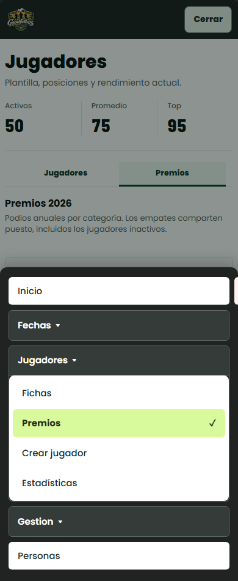
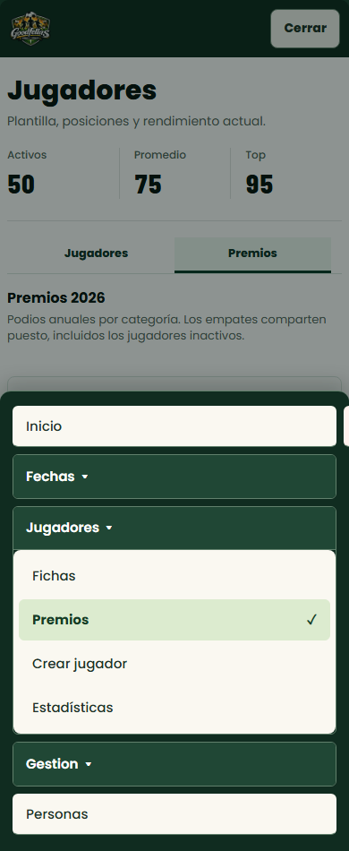
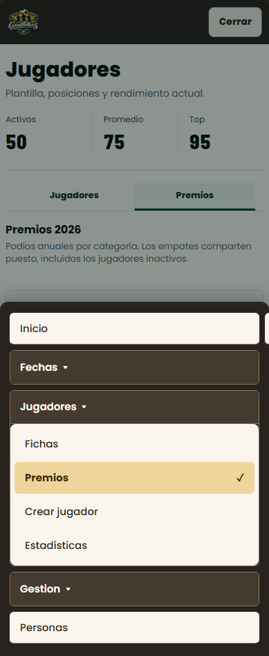

1. Grafito y blanco
La mas nitida y neutral.

2. Bosque y marfil
Recomendada: conserva la identidad de Goodfellas.

3. Cafe y arena
Mas calida, con seleccion en dorado suave.

Tres variantes sobre el menu real. Vista previa; no cambia la aplicacion.
La mas nitida y neutral.

Recomendada: conserva la identidad de Goodfellas.

Mas calida, con seleccion en dorado suave.
